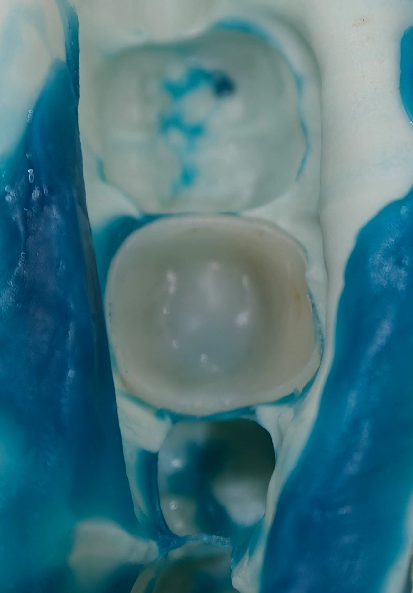

Insight 80 — قالب پیکآپ چیه؟ کاربردهاش چیه؟
تاریخ انتشار:
آخرین بازبینی:
English

توضیح بالینی
قالب پیکآپ یعنی پروتز یا رستوریشن رو تو دهن بیمار بنشونیم و ازش قالب بگیریم، طوری که رستوریشن تو قالب بمونه و همراهش بیاد بیرون. اینجوری لابراتوار فقط شکل بافتها رو نمیگیره، رابطهی واقعی پروتز با دندونای مجاور و بافت نرم رو هم داره.
-
اصلاح کانتکت
یکی از جاهایی که من زیاد ازش استفاده میکنم اصلاح کانتکته. گاهی روکش رو کست کانتکتش درسته ولی تو دهن بازه، و معمولاً مشکل از خود کسته، یا دای جابهجا شده یا سطح پروگزیمال گچ ساییده شده یا قالب خطا داشته. اینجور وقتا روکش رو مینشونم و ازش پیکآپ میگیرم. روکش تو قالب میمونه و وقتی تکنسین میریزدش، روکش دقیقاً همون جایی قرار میگیره که تو دهن بود. اینجوری معلومه کدوم کانتکت چقدر بازه و چقدر باید سرامیک اضافه بشه، و دیگه اصلاح روی همون کستی انجام نمیشه که خطا از اون اومده. -
دو نکته دربارهی عکس
در مورد خود عکس دو تا نکته هست. اول اینکه قالب پیکآپ رو معمولاً با پوتی و واش به صورت همزمان میگیرن. دوم اینکه بعد از درآوردن قالب حتماً داخل روکش رو نگاه کنین. اگه واش رفته باشه زیر روکش، یعنی یا روکش موقع قالبگیری کامل سر جاش ننشسته بوده که در این صورت قالب باید تکرار بشه، یا اینکه واقعاً بین روکش و تراش گپ وجود داره که این خطای ساخته و باید بعد تایید، روکش تکرار شه
پیکآپ جاهای دیگه هم کاربرد داره:
-
انتقال فرم بافت نرم
وقتی با پروتز موقت بافت زیر پونتیک یا دور ایمپلنت رو شکل دادیم، از همون موقت پیکآپ میگیریم تا فرم بافت عیناً به کست منتقل بشه و پروتز نهایی با همون ایمرجنس پروفایل ساخته بشه. -
روکش برای دندان پایهی پارسیل
وقتی دندون پایهی پارسیل روکش لازم داره ولی خود پارسیل هنوز خوبه، با پیکآپ، پارسیل همراه دندون تراشخورده میره لابراتوار تا روکش طوری ساخته بشه که با کلاسپ همون پارسیل جفت بشه. تو تعمیر پارسیل هم به همین شکل ازش استفاده میشه. -
تلسکوپیک و فولآرچ ایمپلنت
تو پروتزهای تلسکوپیک، روکشهای اولیه رو تو دهن مینشونن و ازشون پیکآپ میگیرن تا روکشهای ثانویه بر اساس موقعیت واقعیشون ساخته بشه. تو فولآرچهای روی ایمپلنت هم بعد از امتحان فریمورک، ازش پیکآپ میگیرن تا ادامهی کار روی موقعیت واقعی فریمورک پیش بره.
محتوای این صفحه برای استفادهٔ آموزشی دندانپزشکان و دانشجویان دندانپزشکی تهیه شده است.